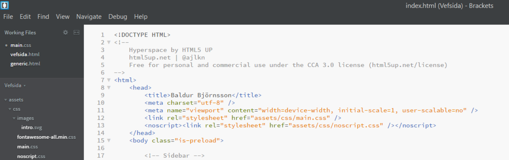

Verkefni I - Vefsíðugerð
Verkefni fyrir hendi
Velja eða smíða á html-sniðmát fyrir eigin vefsíðu. Það verður síðan skipulagt og ferilskrá bætt við. Loks er fyrsta verkefnið skrásett og sett á GitHub með því að nota Git Bash.
Skref 1 - Undirbúningur
Aðgangur var gerður á GitHub og Git Bash hlaðið niður ásamt Brackets. Brackets er notaðt til að skrifa html og css kóða og Git Bash er notað til að hlaða skrám upp á GitHub.
Skref 2 - Sniðmát
Upphaflega var reynt að forrita vefsíðu í html og css frá grunni en snemma komst í ljós að það yrði meiriháttar mál. Því var ákveðið að nota sniðmát frá HTML5UP sem heitir Hyperspace. Það er einfalt og sýnir allt sem sýna þarf.
Sniðmátið
Skref 3 - HTML og CSS
Breytingar voru gerðar á texta og skipulagi sniðmátsins. Engar stórar breytingar voru gerðar til að byrja með, til að tryggja góða virkni. Síðan voru takkar færðir til og lært meira á html. Skipanirnar fengust flestar frá elements.html. Ekki þurfti að eiga mikið við css-skrá sniðmátsins, sem einfaldaði þetta verk töluvert. Fiktað var í litum og öðru skipulagi. Auðveldast reyndist að finna viðeigandi css-línu með því að nota inspect element í vafranum.
Inspect element
Ferilskrá var bætt við með því að nota generic.html sem fylgdi sniðmátinu. Loks var nokkrum ljósmyndum bætt við til að skreyta aðeins.
Skref 4 - Hlaða upp á GitHub
Þetta átti að ganga smurt fyrir sig en tók töluverðan tíma til að gera rétt. Farið var eftir leiðbeiningum og virtist allt ganga vel til að byrja með. Git Bash var notað og kóði beint af GitHub. Fyrsta hindrunin var að staðfesta notandanafn og netfang. Þetta tókst með því að rýna í villumeldinguna og fylgja réttum skipunum. Svo var kóðinn keyrður og beðið var um að staðfesta skráningu á GitHub sem tókst. Eftir þetta birtist aðeins README-skráin en ekkert annað. Í fljótfærni var hinum skráunum hlaðið upp handvirkt til að reyna að koma frumútgáfu vefsíðunnar í gang. Þetta tókst að hluta en css-ið vantaði því ekki er hægt að hlaða upp möppum handvirkt.
Aftur var reynt að fylgja sömu leiðbeiningum en þá kvartaði tölvan að þessar skrár væru nú þegar til á þessu nafni "Vefsida". Því var reynt að gera nýtt repository undir öðru nafni en ekki gekk að hlaða neinu upp.
Algeng villumelding
Það sem virkaði að lokum var að fylgja þessu myndbandi þar sem punkti var skeytt aftan við nokkra kóðabútana frá GitHub. Þá var hægt að velja allar skrárnar í möppunni. En þetta virkaði ekki fyrr en gömlu git-skránni var eytt af sjálfri tölvunni með því að velja "show hidden files" í File Explorer. Þá var hægt að hlaða þessu upp án vandræða.
Kóðabúturinn sem virkaði
echo "# Vefsida" >> README.md
git init
git add README.md
git status
git add .
git status
git commit -m "first commit" .
git status
git remote add origin https://github.com/baldurbjorns/Vefsida.git
git branch -M main
git push -u origin mainÞegar nýja vefsíðan var komin í loftið opnaðist hún ekki þrátt fyrir það að GitHub sagði að hún væri virk. Stutt gúgl leysti vandann. Valið var þema fyrir síðuna og viti menn! Hún virkaði!
Nú er unnið að því að fínpússa allt á vefsíðunni og láta hana virka sem best. Uppfærslur verða gerðar og settar á GitHub og skráðar sem commit.